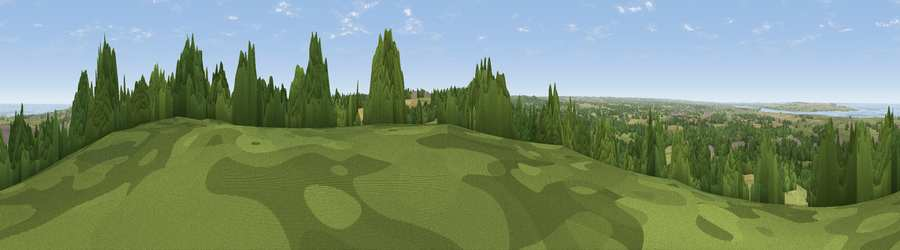

Viewpoint near Dargate
#25635 in England · top 43% of its area beats it · near DargateThe view, rendered

A 360° render of this exact spot computed from the terrain model, tree cover and land cover — summer colours, afternoon light, calibrated against photographs of famous viewpoints. Real trees, hedges and buildings will differ in detail.
The panorama
Grey silhouette: terrain skyline in each direction (720 bearings, Earth curvature and refraction included). Dashed green: skyline with trees (+15 m) and buildings (+8 m) as obstacles. Blue strip: how far the ground is visible on each bearing.
Where the view opens
Wedge length = distance to the farthest visible ground on that bearing (vegetation-aware). Rings at 10, 25 and 50 km.
What fills the view
37% grassland · 36% woodland · 18% cropland · 5% water · 4% built-up
Angular shares of the visible panorama (visual magnitude), not map area. Landscape diversity 0.58 (0–1 Shannon).
Key numbers
More beautiful places nearby
The staircase of upgrades: each row has a higher view potential than everything closer. Driving times are estimates from straight-line distance, calibrated against real road routing — check an actual route before setting out.
| Place | Direction | Drive | Score |
|---|---|---|---|
| Viewpoint near Dunkirk | SSW · 1 km | ~3 min | 55.8 |
| Viewpoint near Yorkletts | NE · 4 km | ~9 min | 60.9 |
| The Mount (Popsy's View) | SSW · 7 km | ~14 min | 61.7 |
| Viewpoint near Boughton Aluph | SSW · 13 km | ~24 min | 66.7 |
| Viewpoint near Wye | S · 14 km | ~25 min | 70.9 |
| Viewpoint near Westwell | SW · 15 km | ~28 min | 72.2 |
| Tolsford Hill | SSE · 24 km | ~39 min | 77.9 |
| Viewpoint near Capel-le-Ferne | SSE · 28 km | ~44 min | 80.2 |
51.30686, 0.97741 · source: screening · position refined by local search. Computed location — check access rights before visiting.